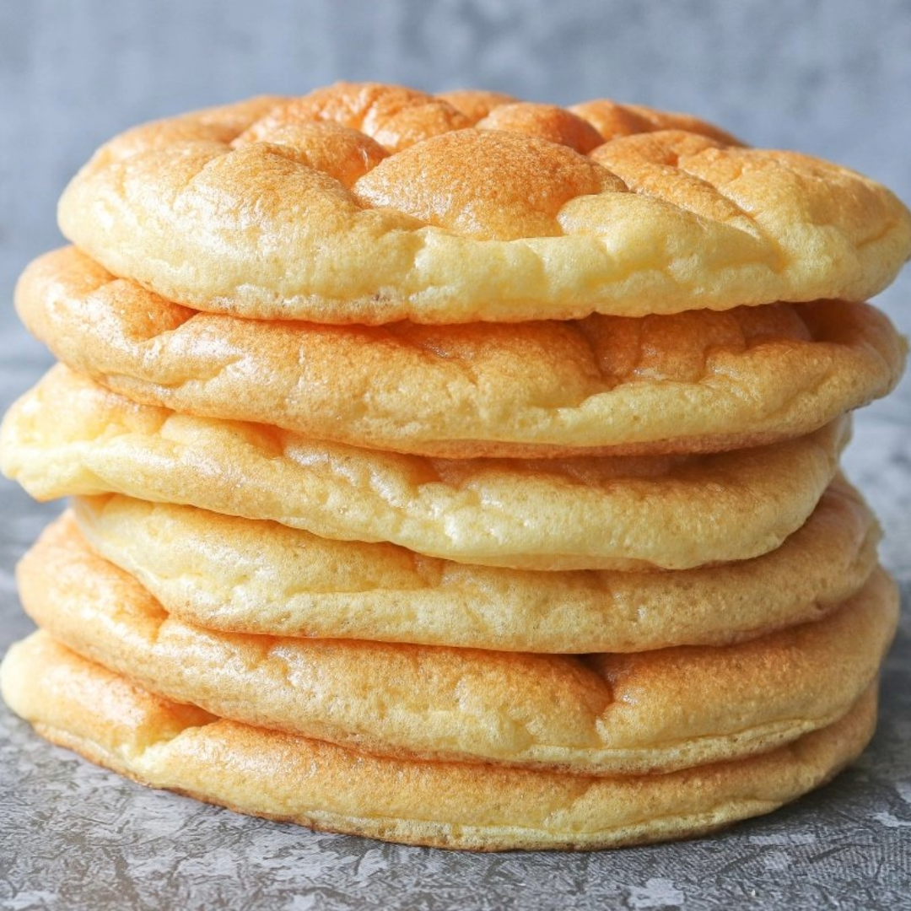
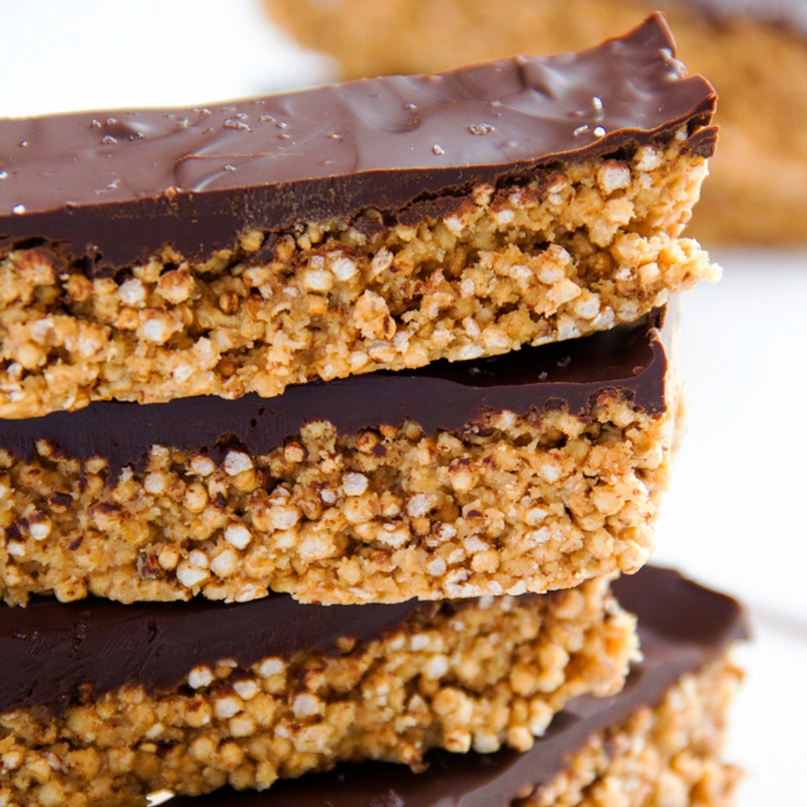
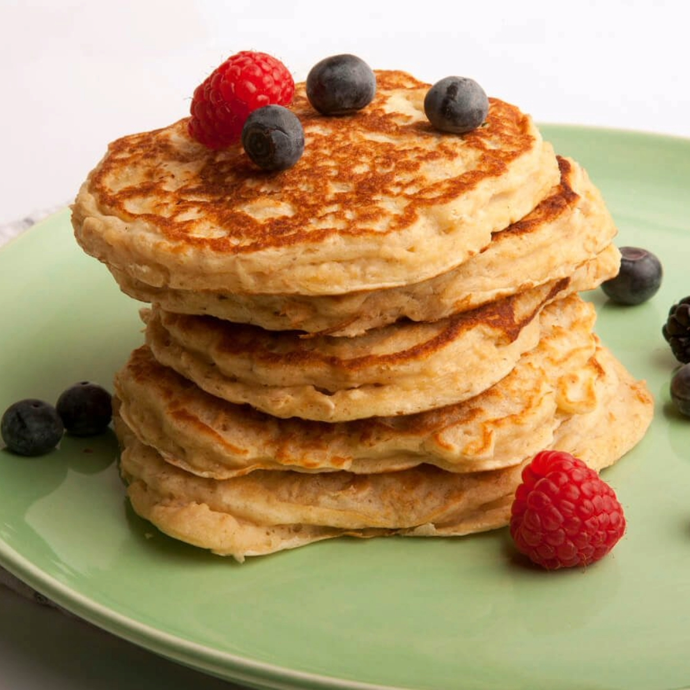
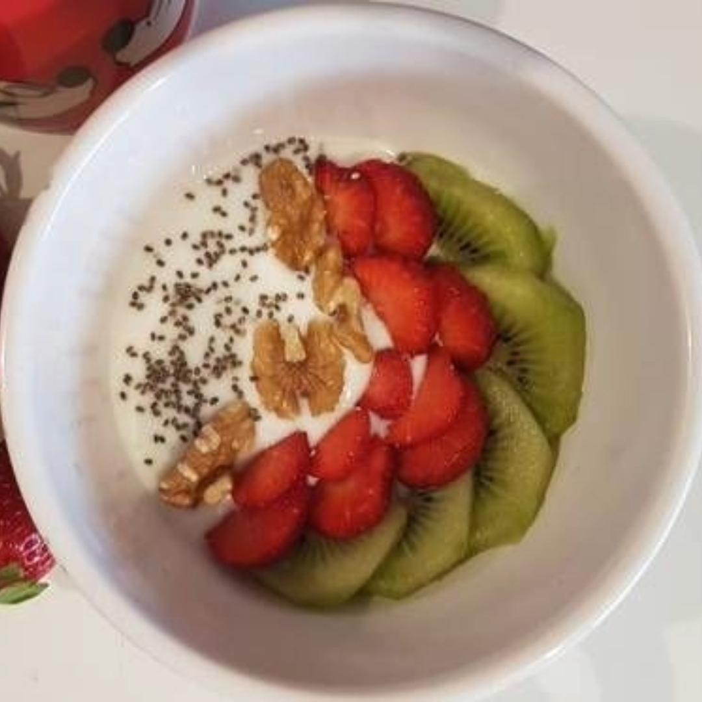
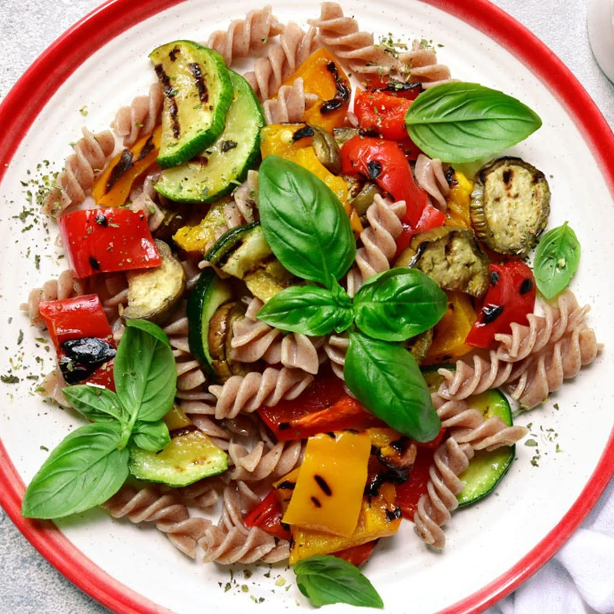
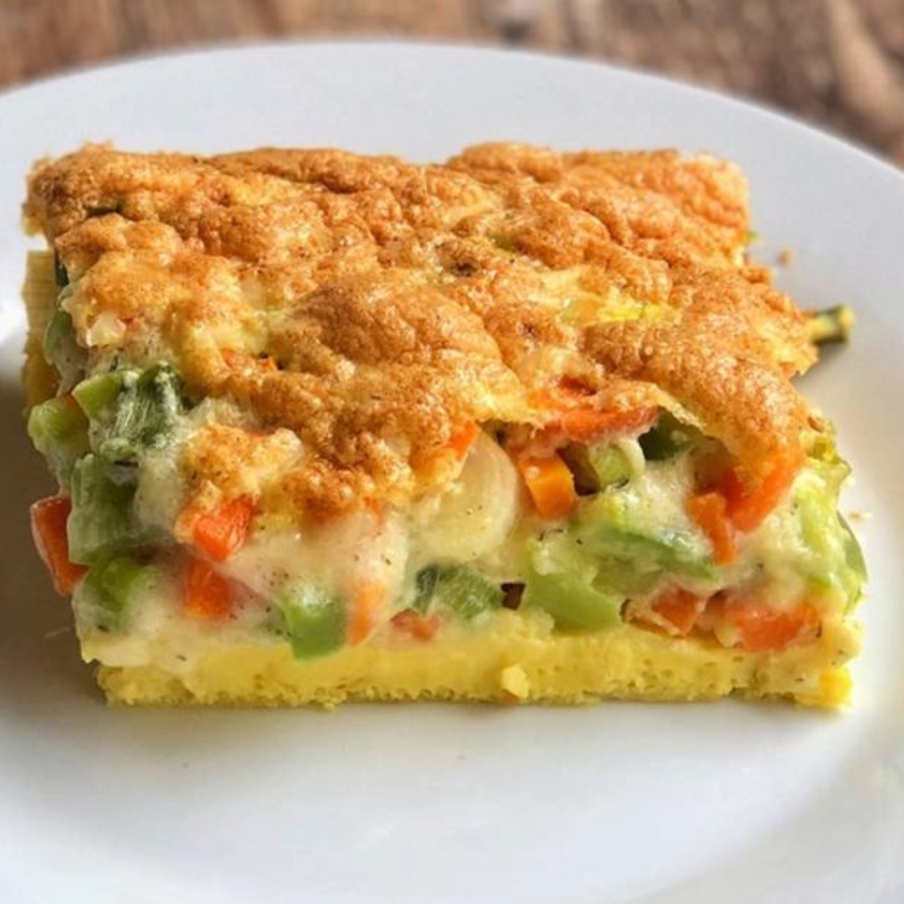
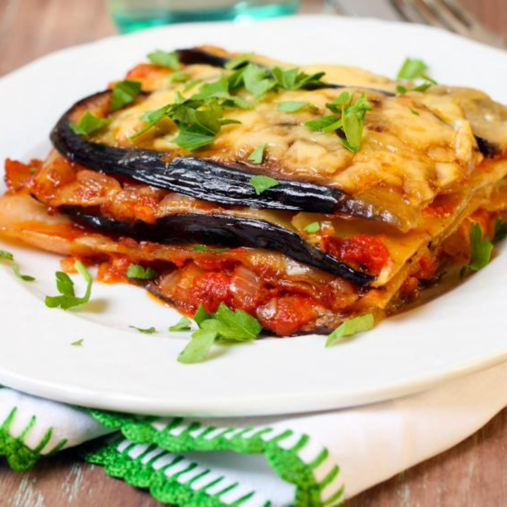
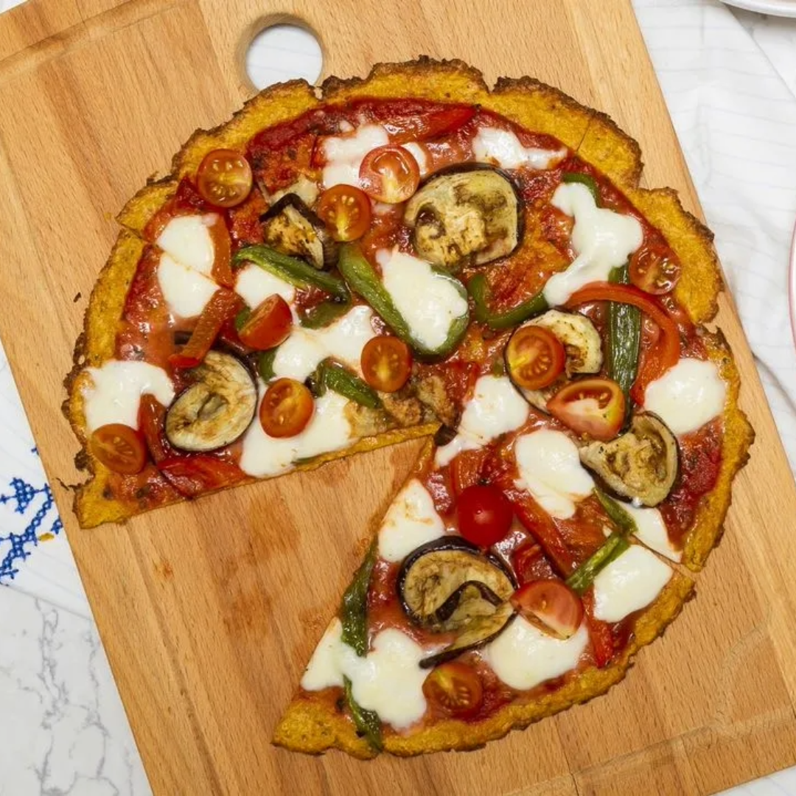

Nuestras recetas favoritas
Desayunos y meriendas
Pan nube
Ingredientes: 1 huevo, 1 cda queso crema o ricota, 1 cdita polvo de hornear, condimentos a gusto (dulce o salado)
Paso a paso: Separar claras, batirlas a punto nieve, unir yemas y queso sin mezclar, horno 180° grados por 10'
Barritas de quinoa y pasta de maní
Ingredientes: 120gr quinoa inflada, 200gr pasta de maní, aceite, endulzante a gusto, cacao amargo en polvo, esencia de vainilla, pizca de sal
Paso a paso: mezclar pasta de maní, endulzante, esencia y quinoa pop. Llevar al freezer. Cuando esté sólido, poner capa de chocolate por encima, llevar al freezer nuevamente
Pancakes de avena
Ingredientes: 1 taza avena, 1 taza leche, 1 huevo, polvo de hornear, pizca de sal
Paso a paso: Triturar la avena, mezclar hasta obtener consistencia uniforme, llevar a sarten
Bowl de yogurt con frutas y frutos secos
Ingredientes: yogurt natural, edulcorante, esencia de vainilla, frutas con bajo índice glucémico, frutos secos
Paso a paso: colocar los ingredientes dentro de un bowl, mezclar bien y, ¡a disfrutar!
Almuerzos y cenas
Fideos integrales con verduras
Ingredientes: fideos integrales, cebolla, pimiento, zapallito, calabacín, zuchinni, condimentos a elección, queso rallado
Paso a paso: cocinar los fideos al dente. En un wok, saltear verduras, cuando estén listas, colocar a los fideos, con un poco de queso rallado
Souffle de verduras
Ingredientes: cebolla, pimiento, zapallito verde, zanahoria, tomate, queso cremoso, queso rallado, huevo, condimentos a gusto
Paso a paso: salteamos las verduras en un wok, agregamos huevos revueltos, cuando la tortilla esté lista, agregamos queso y esperamos que se derrita
Lasagna de berenjena y carne
Ingredientes: berenjena, cebolla, tomates perita, queso cremoso, carne molida, condimentos a elección
Hacer salsa de tomate con carne molida incluída, cortar las berenjenas en láminas finas, cocinarlas y preparar la lasagna. Calentarla en el horno, y listo
Pizza de zanahoria
Ingredientes: zanahorias ralladas, 2 huevos, queso (a gusto), condimentos a gusto, toppings a gusto, salsa de tomate
Paso a paso: mezclar las zanahorias ralladas, los huevos, 1 taza de muzzarella rallado, el queso parmesano, el orégano, el ajo en polvo, la sal y la pimienta hasta obtener una mezcla homogénea. Cocinar en el horno, luego agregar salsa de tomate, toppings y queso